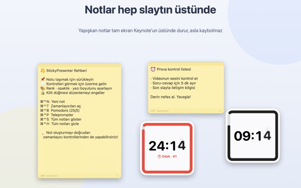
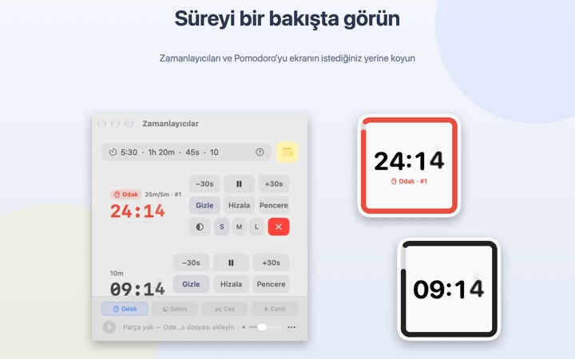
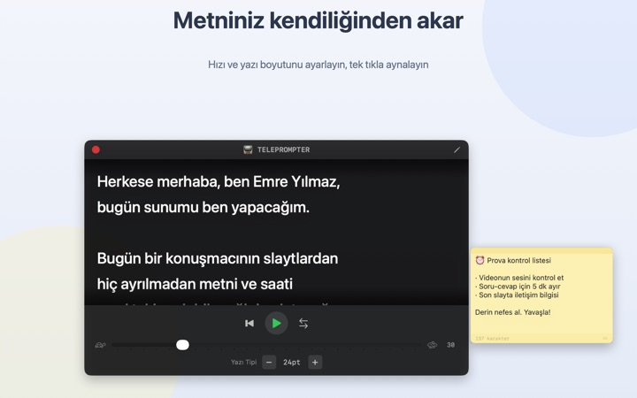
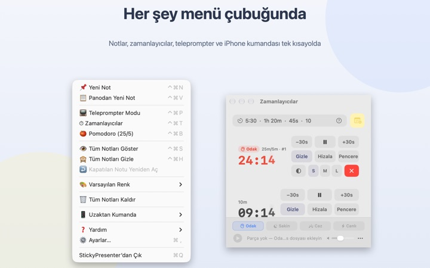

Metniniz ve kalan süre
doğrudan slaytın üstünde
Keynote’u tam ekrana alın, notlarınız ve zamanlayıcı üstte kalmaya devam eder. Sunum uygulamasının odağını hiç almadıkları için kumanda slaytları her zamanki gibi geçirir.
Tüm özellikler ücretsiz. macOS 14 veya üstü gerekir.

Bir slaytın üstünde deneyin
Süreyi uygulamada yazdığınız gibi yazın. Süre biterken widget’ın sizi nasıl uyardığını görmek için 15s’ye dokunun.
Sunum yaparken metni ve saati nereye koyuyorsunuz?
Sunucu görünümü ikinci bir ekran ister, kol saatine bir bakış da salondan hiç kaçmaz. Belki dizüstü bilgisayara kâğıt not yapıştırıp düştüğünü görmüşsünüzdür. StickyPresenter metninizi ve kalan süreyi slaytın tam üstüne, zaten baktığınız yere iğneler.
Bir bakışta ne kadar kaldığını bilirsiniz
Köşedeki kare widget kalan süreyi gösterir. Sona yaklaşırken kırmızıya döner, süre dolunca uyarı sesi çalar ve kenarı yanıp söner.
Süreyi nasıl isterseniz yazın, örneğin 5:30 ya da 1h 20m; 25/5 yazarsanız odak ile mola arasında gidip gelen bir Pomodoro olur. Zamanlayıcıyı ayrı bir pencerede açarak ekran paylaşımında ya da AirPlay’de yalnızca o pencereyi gösterin.

Kameraya bakarak metninizi okuyun
Teleprompter metninizi seçtiğiniz hızda kaydırır ve sona gelince kendiliğinden durur. Metni kopyalayıp ⌘⌃P’ye basın, o metinle hemen açılır.
Yansıtıcı camlı teleprompter düzenekleri için ayna modu var; hız ve yazı boyutu bir sonraki sefere de aynı kalır.

Slayttan hiç ayrılmazsınız
Menü çubuğunda sessizce çalışır; Dock’ta simgesi, takip edilecek penceresi yoktur. Yeni not için ⌘⌃N, zamanlayıcılar için ⌘⌃T gibi kısayollar tam ekran Keynote’ta bile çalışır.
Sahnede ücretsiz iPhone uygulaması Remote Controller for Sticky ile zamanlayıcıyı başlatıp duraklatabilir, slaytı kapatan widget’ı kenara çekebilirsiniz.

Üç adımda başlayın
- 1
Uygulamayı açın
Menü çubuğunda bir not simgesi belirir, ilk açılışta kısa bir rehber açılır.
- 2
Not ve zamanlayıcı ekleyin
Metni kopyalayıp
⌘⌃V’ye basın, ardından konuşmanızın süresini zamanlayıcı alanına yazın. - 3
Tam ekrana geçin
Not ve zamanlayıcı üstte kalır.
Kısayollar ve süre biçimleri
- ⌘⌃N
- Yeni not
- ⌘⌃V
- Panodaki metinle yeni not
- ⌘⌃T
- Zamanlayıcıları göster veya gizle
- ⌘⌃B
- Pomodoro başlat (25 dk odak, 5 dk mola)
- ⌘⌃P
- Teleprompter
- ⌘⌃S · ⌘⌃H
- Tüm notları göster veya gizle
- 10
- Yalnızca sayı dakika demektir (10 dk)
- 5:30 · 1:15:00
- Dakika:saniye, saat:dakika:saniye
- 1h 20m · 45s
- Birimlerle
- 25/5
- Siz durdurana kadar odak/mola döngüsü
Tüm kısayollar Command (⌘) ve Control (⌃) tuşlarını birlikte kullanır ve başka bir uygulamadayken de çalışır. Zamanlayıcılar 99:59:59’a kadar ayarlanabilir.
Sık sorulan sorular
Gerçekten ücretsiz mi?
Evet. Tüm özellikler ücretsiz; iPhone uygulaması Remote Controller for Sticky de ayrı ve ücretsiz bir uygulamadır. İşinize yaradıysa Ayarlar’dan geliştiriciye bahşiş bırakabilirsiniz; bahşiş hiçbir özelliğin kilidini açmaz.
Ekran paylaşımı veya yansıtmada yalnızca zamanlayıcıyı gösterebilir miyim?
Evet. Zamanlayıcının satırındaki Pencere düğmesiyle onu normal bir pencere olarak açın. Böylece ekran paylaşımı ve AirPlay’in pencere listesinde görünür ve yalnızca onu paylaşabilirsiniz.
Bir zamanlayıcı widget’ını gizledim, bulamıyorum.
Zamanlayıcı penceresinde o zamanlayıcının satırının üzerine gelin; widget’ın yeri kesikli çizgiyle gösterilir. Hizala’ya tıklayarak onu pencerenin yanına geri getirin.
Bir notu yanlışlıkla kapattım.
Menü çubuğundaki Kapatılan Notu Yeniden Aç ile son 20 nottan herhangi birini geri getirebilirsiniz. Notlar siz yazarken kaydedilir ve uygulama yeniden açıldığında aynı yere döner.
Bir kısayol çalışmıyor.
Rehberdeki kısayol tablosunda Başka bir uygulama kullanıyor yazıyorsa, başka bir uygulama onu önce almış demektir. O uygulamadan çıkın, kısayol yeniden çalışır. Erişilebilirlik izni gerekmez.
Bukalemun teması neden ekran kaydı izni istiyor?
Bukalemun, widget’ın arkasındaki ekranın rengini okuyup ona uyum sağlar; bunun için o izin gerekir. Hiçbir şey kaydedilmez ya da gönderilmez. İzin vermezseniz Sistem, Açık ve Koyu temaları normal şekilde çalışır.
Arka plan müziğini nasıl eklerim?
Zamanlayıcı penceresinin altındaki müzik çubuğundan bir hava seçin (Odak, Sakin, Caz veya Canlı); uygulama her biri için bir klasör oluşturur. Kendi parçalarınızı oraya koyun, zamanlayıcıyla birlikte sırayla çalsın. Uygulamada hazır müzik yoktur.
iPhone’daki kumanda Mac’imi bulamıyor.
Sırayla kontrol edin: Mac’te StickyPresenter açık mı (menü çubuğundaki simge)? İki cihaz da aynı Wi‑Fi’da mı, misafir ağında ya da hücresel veride değil mi? Hem iPhone’da hem Mac’te Gizlilik ve Güvenlik altında Yerel Ağ izni verildi mi? VPN kapalı mı?
Kumanda eşleştirme kodunun yanlış olduğunu söylüyor.
Mac’in menü çubuğunda Uzaktan Kumanda altında şu an görünen dört haneli kodu girin. Yeni Eşleştirme Kodu’na tıkladıysanız yalnızca yeni kod geçerlidir. İlk eşleştirmeden sonra uygulamayı açar açmaz bağlanır.
Başkası zamanlayıcımı kontrol edebilir mi?
Kodunuz olmadan edemez. Mac yalnızca doğru kodu giren kumandaları, yerel ağdaki şifreli doğrudan bağlantı üzerinden kabul eder. Kodu biri gördüyse menü çubuğunda Uzaktan Kumanda altından Yeni Eşleştirme Kodu’nu ya da Eşleşen Uzaktan Kumandaları Unut’u seçin.
Notlarım ve metinlerim nerede saklanıyor?
Yalnızca bu Mac’te. Hesap da reklam da yok; anonim kullanım istatistikleri ve kendi gönderdiğiniz geri bildirimler dışında hiçbir şey internete çıkmaz.
Sorularınız, hata bildirimleriniz ya da fikirleriniz için mizzking75@gmail.com adresine yazın.